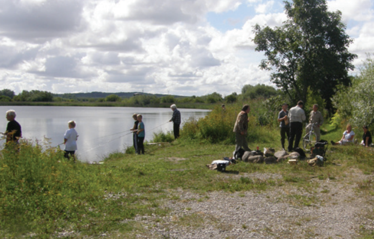

Østerådalen Nord

From the Bronze Age and far into the future, only the slopes down to the valley have
been habitable. Until at the end of the 19th century, the river wound through a swampy marsh and
meadow area all the way to Gammel Mølle, which where Mølleplads is today. Later, the area south of
Over Kæret was transformed into agricultural land. The river was straightened out, the damp areas was
drained, and the railway line between Aalborg and Hadsund was led through the area.